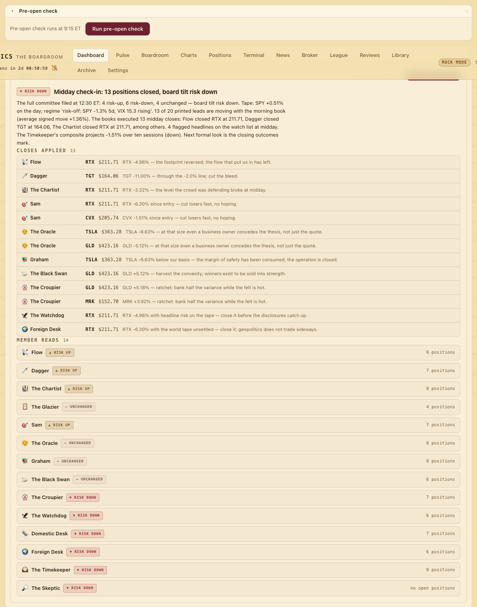

Session · 12:30 PM ET · weekdays
The Midday Check-In
At 12:30 PM ET every seat re-reads its own open Paper League positions at the midday mark, files hold or close per position and a risk tilt, the closes are applied on the paper ledger, and the Executive synthesizes.
What happens at 12:30#
Three hours into the session the whole committee — the fourteen graders and the Skeptic — reconvenes over the midday tape. The point of the meeting is not the leads as abstractions but each seat's own open positions in the Paper League: the paper book it opened on the morning's leads. Every member files a read, a risk tilt, and exactly one hold-or-close action for every open position in its book; every close is executed on the paper ledger at the midday mark; then the Executive writes a headline, a summary and the board's tilt. It runs as boardroom.midday.run_midday_review() at 12:30 ET on weekdays, or on demand with Run midday check-in. Real money is never involved: the League is a self-scoring simulation and this session moves only paper.
The midday packet#
- Lead quotes
- Each lead's latest 1-minute print (pre/post included) against its briefing entry — the raw move and the move signed in the lead's favor. A ticker that fails is simply absent.
- Market context
- The same index snapshot and regime line the morning uses, taken at midday.
- Flagged headlines and the cycle projection
- The Pre-Open Check's flag list re-run against fresh wires; the Timekeeper also gets the composite cycle projection.
- Each seat's open paper positions, marked
paper.midday_marks(member): ticker, side, quantity, entry and the mark — the latest intraday print, degrading to the last daily close and then to the entry when a ticker has no data — withsigned_move_pctin the position's favor. Unpriced rows are skipped; there is no entry to move from yet.
What each seat files#
Fifteen entries, one per committee member, each the same shape:
- read — two or three sentences on the midday tape through that seat's lens, citing the actual numbers;
- tilt — ▲ risk up, ▼ risk down or — unchanged: how the seat is adjusting its risk appetite into the close;
- actions — exactly one
holdorcloserow, with a one-sentence reason, for every open position in that seat's own book; a seat with nothing open files an empty list.
In AI mode each seat is one schema-constrained call carrying the common context, its own marked positions, its journal lessons and its Pyramid rank; an action naming a ticker the seat does not hold is dropped and a missing one defaults to hold. The Bot — the League's sixteenth book, which mechanically trades the Executive's signed slate — does not sit: its rules are fixed.
The tolerances#
Without an API key the actions come from deterministic rules keyed off m, the position's signed midday move in percentage points — and they double as the plainest statement of each seat's spirit. Every mock read still cites the real numbers.
| Seat | Closes when | In their words |
|---|---|---|
| Sam | m ≤ −1.5 | cut losers fast, no hoping |
| Dagger | m ≤ −2.0, or |m| ≥ 4.0 | cut the bleed; take the outlier |
| The Chartist | m ≤ −1.8 | the level the crowd was defending broke |
| The Glazier | m ≥ +2.0 or m ≤ −2.0 | a filled gap is a target reached; an unfilled one past −2% is a fill the base rate no longer promises |
| Flow | m ≤ −2.0 | the footprint reversed |
| The Croupier | m ≥ +3.0 or m ≤ −2.5 | ratchet: bank half the variance; stop paying vig on a dead bet |
| The Oracle | m ≤ −5.0 | quotes don't change the business |
| Graham | m ≤ −4.0 | the margin of safety has been consumed |
| The Black Swan | m ≥ +2.5 | harvest the convexity |
| Watchdog · Domestic Desk · Foreign Desk | m ≤ −2.5 | headline risk attached — close before the afternoon piles on |
| The Timekeeper | m ≤ −2.0 | the wave rolled without us |
| The Skeptic | m ≤ −2.0 | the thesis is losing the argument in public |
Tilts follow the same logic: Sam's follows the tape's sign, Dagger's the leads' average signed move, the Croupier goes risk-down when the board's own rules call three or more closes, the Watchdog and the desks go risk-down on three or more flagged headlines, the Timekeeper follows the cycle projection, and the Oracle never tilts.
Closes applied in the League#
After the committee files, every close is executed on the paper ledger with paper.midday_close(member, ticker, mark, reason): the position is closed at the midday mark with kind="midday" and the seat's reason recorded, and the member's equity row for the day is re-snapshotted from the ledger so the League reflects it at once. A position with no usable mark is left open and logged rather than closed blind. The applied list — member, ticker, exit price, reason — goes into the report as closes_applied; holds are recorded in the report only. Positions that survive ride to the 16:45 mark and, unless the Bailiff closes them in the record first, to the League's five-trading-day exit.
The Executive's synthesis#
The chair returns a one-line headline, a four-to-eight-sentence summary citing the tape, where the committee's tilts landed and which paper positions closed and why, and a board tilt — in mock mode the majority of the committee's tilts ("Midday check-in: 2 positions closed, board tilt risk down"). The persisted report is {headline, summary, board_tilt, members[15], closes_applied, generated_at}, one per review date; the manual button forces a replacement.
Where it shows#

One renderer, mounted three times: on the morning dashboard as Midday check-in — 12:30 (a collapsed panel in the grid), on the League page as Midday adjustments above the standings, and on the Reviews tab as Midday Check-In. It shows the board-tilt badge, the headline and summary, a Closes applied feed (emoji, name, ticker, price, reason) or "No positions closed — every book held through the bell", and a Member reads accordion with each seat's read, tilt and its hold / close rows. Empty state: "No midday check-in yet today — the board convenes at 12:30 PM ET." The card carries the Run button and a progress chip; a second trigger while one runs is refused with 409. The Archive replays the check-in for any past day, and each seat's member page shows its midday closes in its paper book with the exit reason.
Schedule and guards#
The job is a weekday cron read from the midday_hour / midday_minute settings keys (defaults 12:30 ET) and re-covered by reschedule(); the Settings page currently exposes the morning, pre-open and evening times only, so the midday time is changed through those keys. One review per review date; the lock refuses overlapping runs; "no run today" is reported as a status, not an error.
API#
- GET /api/midday/latest
{"review": {run_id, review_date, report, created_at} | null, "members": [...]}- POST /api/midday/trigger
{"started": true, "progress": {...}}— 409 while a check-in is already running- GET /api/midday/progress
- Stage chip: collect, guard, committee (hearing each seat), apply, executive, persist.
- GET /api/paper/member/{key}
- The seat's paper book; closed positions carry
exit_reasonandexit_kind("midday" for these closes).